Router Simulator
ISAG release software
java
software
email
: tc41030@hotmail.com
Contents
Table of Contents
Welcome
. 3
About
... 3
Keep informed
. 3
License
.
4
Installation
..
5
Requirements
5
Installation
5
Tutorial
7
Starting application
..
7
Menu items
12
Creating your network
simulation
.... 13
Working with standalone
. 21
Working with client/server
... 23
Router
Simulator Copyright © 2002 2003
Welcome
Welcome
About
คู่มือการใช้งาน โปรแกรมการจำลองการทำงาน
ของเราเตอร์โปรแกรมนี้พัฒนามาจากภาษา จาวา
สำหรับผู้ที่สนใจการทำงานและอยากทดลองติดตั้งอุปกรณ์
เน็ตเวิคที่เรียกว่าเราเตอร์นี้ ด้วยการจำลองเครือข่ายขึ้นมาและทำการ คอนฟิกให้ถูกต้อง
ซึ่งการตรวจสอบว่าทำการคอนฟิกถูกหรือว่า จะแสดงโดยพฤติกรรมของ
เราเตอร์แต่ละตัวในเครือข่ายผ่านคำสั่งที่ป้อนเข้าไป
ในคู่มือการใช้งานนี้
คุณจะได้เรียนเกี่ยวกับการใช้งานของโปรแกรมในลักษณะต่างๆ ทั้ง
อยู่บนเครื่องเดียวและการทำงานแบบ หลายเครื่องบนเครือข่าย
Keep informed
-
คำสั่งและรายละเอียดของเราเตอร์แต่ละรุ่น ที่ http://www.cisco.com
-
รายละเอียดของภาษา
จาวาที่ใช้ในการพัฒนา ที่ http://www.java.sun.com
-
ข่าวสารการพัฒนา
ที่ http://www.ce.kmitl.ac.th/project/index.php
-
ถามเกี่ยวกับ
โปรแกรม ที่ http://isag.ce.kmitl.ac.th
Router
Simulator Copyright © 2002 2003
License
License
ROUTER SIMULATOR was
developed by Mr. Anucha Klaphachon
and Mr. Chumnan Pearpiw from Kingmongkut Institute of technology Ladkrabang
under the provision of
Mr.Akkradach Watcharapupong This software of a result of The National
Software Contest: NSC 2003 supported by the National Electronics and Computer
Technology Center (NECTEC). NECTEC hereby grants to the user a temporary ,
non-exclusive use this software solely for internal purpose. User shall not
commercially distribute , sub-license , resell or otherwise reproduce for any
such purposes.
This software is provided to user AS IS . NECTEC
takes no part in developing this software. NECTEC shall not be liable in any
event for incidental or consequential damages in connection with , or arising
out of , the furnishing , performance , or use of these program.
Router
Simulator Copyright © 2002 2003
Installation
Installation
Requirement
To
use Router Simulator , you need :
-
Sun Microsystems JRE1.4 or later , J2sdk1.4 or later
Router
Simulator has been tested with :
-
Sun Microsystems J2sdk1.4 ( Windows )
Installation
n Copy folder RouterSim ลงในเครื่อง เช่น ลงใน D:\Porgram\RouterSim
n Install j2sdk1.4 ลงในเครื่อง เช่น ลงใน D:\j2sdk1.4\
n ทำการแก้ไข ไฟล์ OpenService.bat
1 set
path = c:\java\j2sdk1.4\bin
2 set
classpath = c:\RouterSim\classes
3 rmiregistry
4 java
-jar Server.jar
บรรทัดที่ 1 แก้ไข path ให้ชี้ไปยัง ไดเรคทรอรี่
ที่นำ j2sdk1.4 ไปลงไว้
บรรทัดที่
2 แก้ไข classpath
ให้ชี้ไปยัง ไดเรคทรอรี่ ที่นำ RouterSim ไปลงไว้
ผลลัพธ์
จะได้เป็น
1 set
path = D:\j2sdk1.4\bin
2 set
classpath = D:\Program\RouterSim
3 rmiregistry
4 java
-jar Server.jar
Router Simulator
Copyright © 2002 2003
n ทำการแก้ไข ไฟล์ Run.bat
1 set
path = c:\java\j2sdk1.4\bin
2 set
classpath = c:\RouterSim\classes
3 java
-jar Client.jar
บรรทัดที่ 1 แก้ไข path ให้ชี้ไปยัง ไดเรคทรอรี่
ที่นำ j2sdk1.4 ไปลงไว้
บรรทัดที่
2 แก้ไข classpath
ให้ชี้ไปยัง ไดเรคทรอรี่ ที่นำ RouterSim ไปลงไว้
ผลลัพธ์
จะได้เป็น
1 set
path = D:\j2sdk1.4\bin
2 set
classpath = D:\Program\RouterSim
3 java
-jar Client.jar
Router
Simulator Copyright © 2002 2003
Tutorial
Tutorial
Starting
application
หลังจากทำการ install ตามข้อแนะนำแล้ว
จะมาถึงการใช้งานโปรแกรม โปรแกรมนี้จะแบ่งเป็น 2 ส่วนคือ ไฟล์ ชื่อ OpenService.bat
ใช้สำหรับเปิดบริการของเครื่องที่ทำหน้าที่เป็น server เพื่อให้บริการเครื่องที่ run ไฟล์ Run.bat ที่จะทำหน้าที่เข้าใช้งานของ Server
ที่เปิดให้บริการอยู่
ตัวอย่างการใช้งาน
โปรแกรม
ขั้นตอนที่ 1 เปิดบริการ Server โดย double
click ที่ไฟล์ OpenService.bat จะได้ผลดังนี้
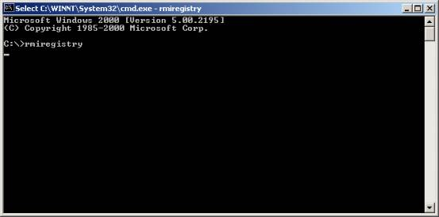
เป็นการเปิดบริการผ่าน protocol RMI
Router
Simulator Copyright © 2002 2003
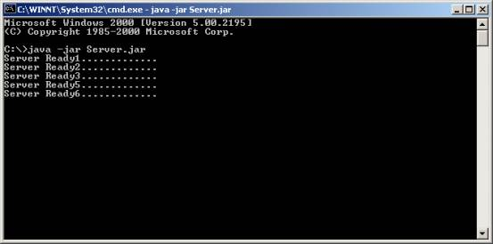
เป็นการเปิดบริการของ Server
ขั้นตอนที่ 2 เปิดใช้งานโปรแกรมโดยการ double click ที่
Run.bat
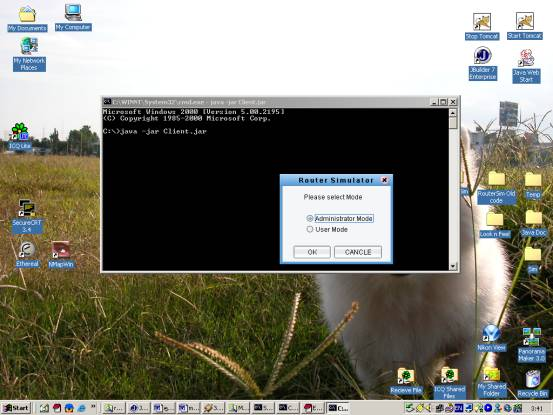
โปรแกรมเปิดขึ้นมาและมี Dialog เลือกโหมดการใช้งานอยู่
Router
Simulator Copyright © 2002 2003
โหมดการทำงานมีอยู่ 2 โหมดคือ
Administrator
Mode หมายถึงสามารถใช้งานโปรแกรมได้เต็มรูปแบบคือสามารถสร้างเครือข่ายและปรับแต่งค่าต่างๆได้ทุกส่วนของโปรแกรม
และ User Mode จะมีสิทธิเพียง ทำการ load เครือข่ายจากผู้ที่อยู่ใน Administrator mode เพื่อนำไปคอนฟิกค่าต่างๆของเราเตอร์แต่ละตัว
ขั้นตอนที่ 2.1 เลือกใช้งาน Administrator Mode
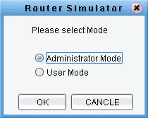
เมื่อเลือกใช้งานใน Administrator Mode
แล้วกด OK
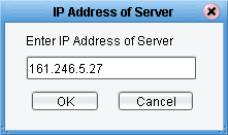
ทำการใส่หมายเลข IP Address ของเครื่องที่เปิดบริการ
เป็น Server
แล้วกด OK

กด OK เพื่อยืนยันการทำงาน
Router
Simulator Copyright © 2002 2003

เริ่มต้นหน้าจอการใช้งานสำหรับ
Administrator
Mode ที่จะสามารถทำการออกแบบ เครือข่ายได้
ขั้นตอนที่ 2.2 เลือกใช้งาน User Mode
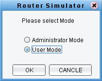
เลือกโหมด เป็น User Mode
แล้วกด OK
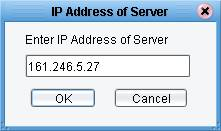
ทำการใส่หมายเลข IP Address ของเครื่องที่เปิดบริการ
เป็น Server
แล้วกด OK
Router
Simulator Copyright © 2002 2003
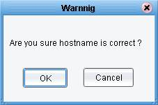
กด OK เพื่อยืนยันการทำงาน
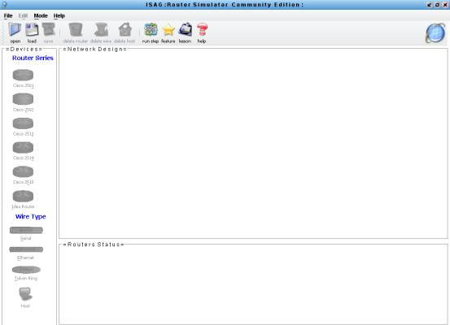
เริ่มต้นหน้าจอการใช้งานสำหรับ
User Mode ที่จะทำการคอนฟิกเราเตอร์ได้
Router
Simulator Copyright © 2002 2003
Tutorial
Tutorial
Menu Items
เมนูการใช้งาน
 ปุ่มเปิดไฟล์
ใช้สำหรับเปิดไฟล์ที่สร้างขึ้น
ปุ่มเปิดไฟล์
ใช้สำหรับเปิดไฟล์ที่สร้างขึ้น
 ปุ่มโหลดไฟล์ ใช้สำหรับโหลดไฟล์ที่สร้างขึ้นโดยผู้ที่มีสถานะเป็น
ผู้จัดการระบบ( administrator )
ปุ่มโหลดไฟล์ ใช้สำหรับโหลดไฟล์ที่สร้างขึ้นโดยผู้ที่มีสถานะเป็น
ผู้จัดการระบบ( administrator )
 ปุ่มเซฟไฟล์ ใช้สำหรับเซฟไฟล์เน็ตเวิคที่สร้างขึ้นโดยผู้จัดการระบบ (
administrator )
ปุ่มเซฟไฟล์ ใช้สำหรับเซฟไฟล์เน็ตเวิคที่สร้างขึ้นโดยผู้จัดการระบบ (
administrator )
ปุ่มลบเราเตอร์ ใช้สำหรับลบเราเตอร์ตัวที่ทำการเลือกไว้
ปุ่มลบสาย ใช้สำหรับลบสายที่เลือกไว้
ปุ่มลบโฮสต์ ใช้สำหรับลบโฮสต์ที่เลือกไว้
ปุ่มสั่งการทำงาน ใช้สำหรับการสั่งทีละสเต็ป โดยจะใช้เมื่อเลือกการทำงานใน single mode
ปุ่มแสดงรายละเอียดของเราเตอร์ ใช้แสดงจำนวนอินเทอร์เฟส ของเราเตอร์แต่ละรุ่น
 ปุ่มแสดงบทเรียน บทเรียนในการฝึกหัดคอนฟิกเราเตอร์
ปุ่มแสดงบทเรียน บทเรียนในการฝึกหัดคอนฟิกเราเตอร์
 ปุ่มช่วยเหลือ บอกรายละเอียดต่างๆ เช่นการใช้งานของโปรแกรม
ปุ่มช่วยเหลือ บอกรายละเอียดต่างๆ เช่นการใช้งานของโปรแกรม
- Device Pane ใช้สร้างอุปกรณ์ลงบน
Network Design Pane
- Status Pane ใช้แสดงค่า
รายระเอียดของ เราเตอร์แต่ละตัว
Router
Simulator Copyright © 2002 2003
Tutorial
Tutorial
Creating your network
simulation
ตัวอย่างการออกแบบเครือข่าย
เมื่อเปิดโปรแกรมใน Administrator Mode จะได้หน้าจอพร้อมออกแบบ
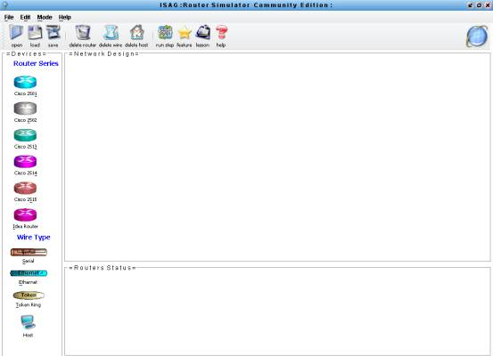
Router
Simulator Copyright © 2002 2003
ทำการสร้างอุปกรณ์ต่างๆจาก Device
ในที่นี้เราสร้างเราเตอร์
รุ่น 2501 2502 2513 2514 อย่างละตัว และสร้าง สายแบบ Serial Ethernet และ Token Ring อย่างละตัว ดังรูป

Router Simulator
Copyright © 2002 2003
ทำการเชื่อมต่อสายกับเราเตอร์
โดยคลิ้ก ขวาที่สายและเลือก Connect อินเทอร์เฟสของเราเตอร์ที่ต้องการต่อ
ดังรูป

 เลือก อินเทอร์เฟส
ของเราเตอร์ที่ต้องการทำเชื่อมต่อ
เลือก อินเทอร์เฟส
ของเราเตอร์ที่ต้องการทำเชื่อมต่อ
ในที่นี้จะเลือก
S0 ของ Router1
กับ
S0 ของ Router
2
Router Simulator
Copyright © 2002 2003
ทำการกำหนด Network Address ให้กับสาย โดยการคลิ้กขวาที่สาย และเลือก Network Address
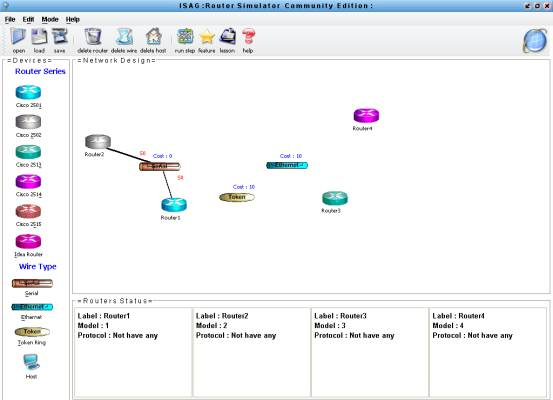
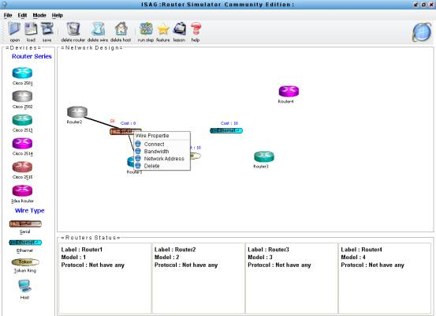
Router Simulator
Copyright © 2002 2003
 ทำการกำหนด Network Address ให้กับสายเพื่อระบุให้เราเตอร์ที่ต่ออยู่ทำการคอนฟิกอย่างไร
ทำการกำหนด Network Address ให้กับสายเพื่อระบุให้เราเตอร์ที่ต่ออยู่ทำการคอนฟิกอย่างไร
จะได้ผลลัพธ์จากการกำหนด Network Address ดังนี้

Router Simulator
Copyright © 2002 2003
ทำการเชื่อมต่อสายที่เหลือตามรูปแบบที่ต้องการ

Router Simulator
Copyright © 2002 2003
หลังจากออกแบบเครือข่ายดังรูปให้ทำการ
save และสามารถทำการคอนฟิกเราเตอร์ได้ตามที่ได้ออกแบบไว้ผ่านทาง Router
Console โดยสามารถเรียก Console ขึ้นมาด้วยการคลิ้กขวาที่
เราเตอร์ แล้วเลือก Console หรือทำการ Double Click ที่เราเตอร์เลยก็ได้ดังภาพ
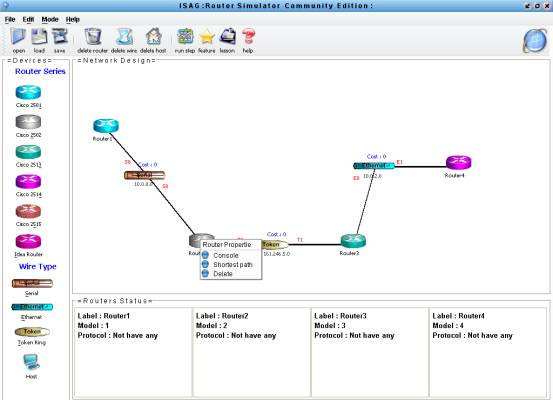
Router Simulator
Copyright © 2002 2003
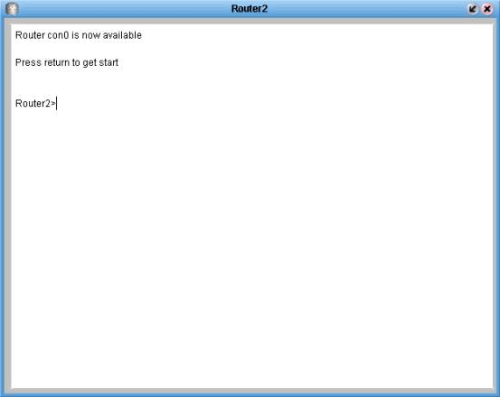
ทำการคอนฟิกค่าต่างๆของเราเตอร์ได้จากหน้าจอ
Console ที่เปิดขึ้นมา
Router Simulator
Copyright © 2002 2003
Tutorial
Tutorial
Working with standalone
จากขั้นตอนที่แล้วเราทำการออกแบบเครือข่ายไว้
การใช้งานแบบ standalone
นั้นเราสามารถใช้โปรแกรมแบบ Administrator Mode ได้
ขั้นตอนแรก
เรียกข้อมูลที่ออกแบบไว้ โดยกดปุ่ม Load ที่ ทูลบาร์ ข้อมูลที่เคย save
ไว้จะออกมาดังรูป และ สามารถทำการคอนฟิกและทดสอบได้ต่อไป
กดปุ่ม Load ใน
เมนูบาร์
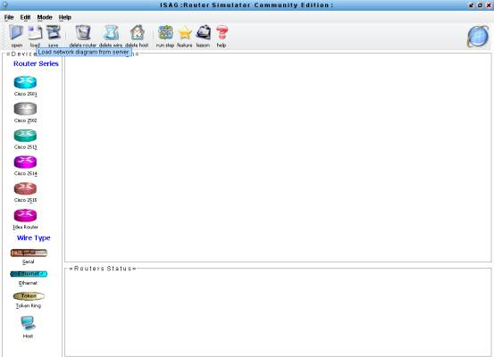
Router Simulator
Copyright © 2002 2003
โปรแกรมจะทำการโหลด
ข้อมูลที่เซฟไว้ออกมา
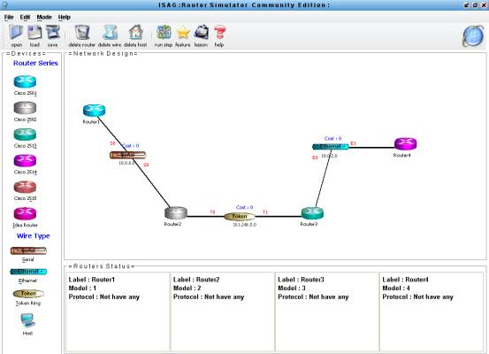
จากนั้นก็สามารถทำการคอนฟิกต่อไปได้ในรูปแบบ
standalone ผ่านทางคอนโซล
Router Simulator
Copyright © 2002 2003
Tutorial
Tutorial
Working with client/server
การทำงานแบบ Client/Server จะต้องกำหนดเครื่องใดเครื่องหนึ่งเป็น
Server และ ส่วนของ Client จะต้องเลือกการใช้งานแบบ
User Mode โดยการใช้งานหลายๆเครื่องใน Designed
Diagram เดียวกันนั้นจะกำหนดสิทธิการเข้าไปคอนฟิกเราเตอร์แต่ละตัวด้วย
password ภายในเราเตอร์แต่ละตัวซึ่ง
สามารถกำหนดเอาไว้ได้ในคำสั่งของเราเตอร์เอง ดังนี้
เมื่อเปิดโปรแกรมแบบ
User Mode ขึ้นมา ปุ่มต่างๆที่ใช้สำหรับการออกแบบเครือข่ายจะถูก Disable ไปเพราะใน User Mode ผู้ใช้มีสิทธิการใช้งานเพียงการคอนฟิกค่าเราเตอร์และทดสอบค่าต่างๆผ่านทาง
Console เท่านั้น
หน้าจอเมื่อ Client โหลดเครือข่ายใช้งาน

Router Simulator
Copyright © 2002 2003
Router Simulator
Copyright © 2002 2003